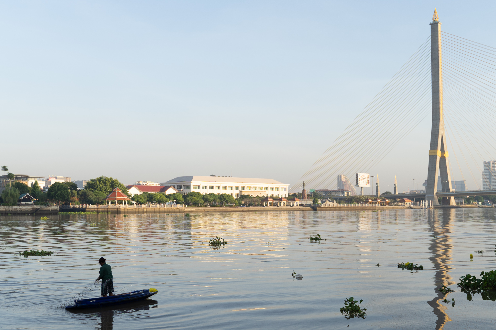

Travel · 08.25.20265 min readWhere the River Holds the Light川が光を抱く場所A quiet morning on the Chao Phraya, where a bridge, a boat, and the current share the same golden light.
Essay · 06.18.20266 min readThe Color of Morning朝の色についてWalking without a destination, and noticing how the city slowly learns to wake.
Notes · 05.02.20264 min readA Portrait Is a Conversationポートレートは対話On slowing down, sharing the silence, and making a portrait together.
Travel · 04.11.20268 min readLetters from the Coast海辺からの便りThree days beside the sea, where time was measured by tides and changing light.